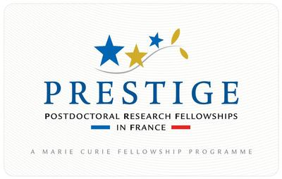

About me
I am an Associate Professor at the Communication Systems Department at IMT Lille Douai (France), a school of engineering of the Institute Mines Telecom. I belong to the SIGMA team at CRIStAL Center (UMR CNRS 9189).
I received the degree in Telecommunication Engineering, the M.Sc. degree in Communication Technologies, and the Ph. D. in Electrical Engineering from University of Cantabria.
Research Interests
My research interests are in statistical signal processing and computational statistics. My work covers diverse topics in these areas, including Monte Carlo methods, Bayesian inference in static and dynamical models, signal processing for biomedical applications, and wireless communications. Most of my recent (and ongoing!) work is in importance sampling methodology, e.g. multiple importance sampling, adaptive importance sampling, or sequential Monte Carlo (particle filtering).
Ongoing Grants and Fellowships
- I am the PI of the starting grant PISCES (150k€, 2018-2021), funded by the French Agénce National de Recherche (ANR).
- Fulbright Research Fellowship (2017-2018), funded by the French-American Fulbright Commision.
- Marie Curie Fellowship and PRESTIGE Fellowship (2017-2018), through the Marie Curie Actions of the European Union’s Seventh Framework Programme and the PRESTIGE programme coordinated by Campus France.
